Daftar Menu Katsuya
Jelajahi berbagai pilihan hidangan autentik khas Jepang kami, mulai dari hidangan pembuka yang menggugah selera hingga pencuci mulut yang manis.
Appetizer (Hidangan Pembuka)
-
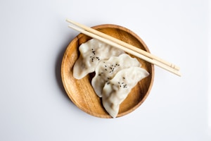
Gyoza Panggang (5 pcs)
Rp 35.000Pangsit khas Jepang isi daging babi/ayam dan sayuran yang dipanggang renyah di bagian bawah.
-

Edamame Rebus
Rp 25.000Kacang kedelai muda khas Jepang yang direbus perlahan dengan taburan garam laut.
-
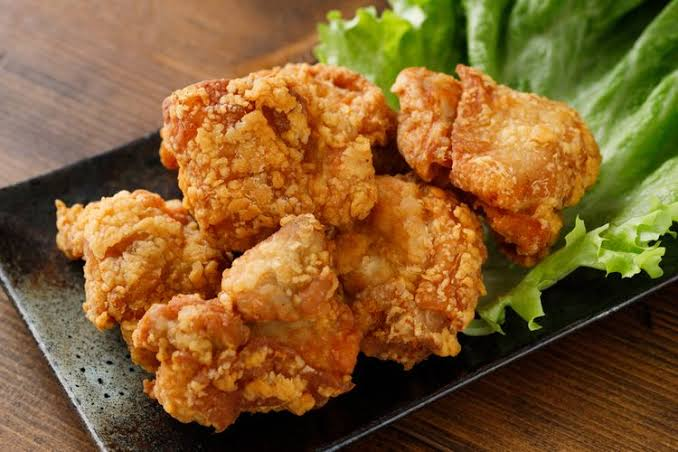
Chicken Karaage
Rp 40.000Ayam goreng tanpa tulang khas Jepang yang renyah di luar dan sangat juicy di dalam.
-
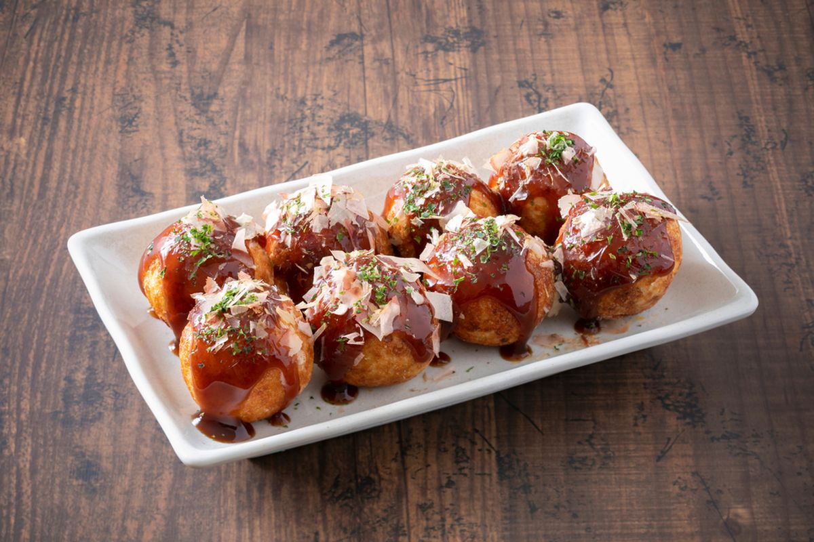
Takoyaki (4 pcs)
Rp 35.000Bola-bola adonan gurih berisi potongan gurita dengan saus manis, mayones, dan katsuobushi.
-
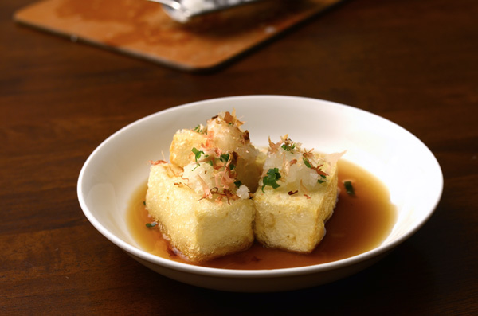
Agedashi Tofu
Rp 30.000Tahu sutra Jepang yang digoreng ringan, disajikan dengan kuah dashi hangat dan lobak parut.
Main Course (Hidangan Utama)
-

Tokyo Tonkotsu Ramen
Rp 55.000Ramen kuah kaldu tulang pekat dengan toping chashu lembut dan telur setengah matang.
-

Spicy Miso Ramen
Rp 58.000Ramen dengan bumbu miso pedas khas Hokkaido dipadu dengan potongan daging cincang.
-

Chicken Katsu Curry
Rp 50.000Nasi kari Jepang kental disajikan dengan ayam katsu krispi yang renyah.
-
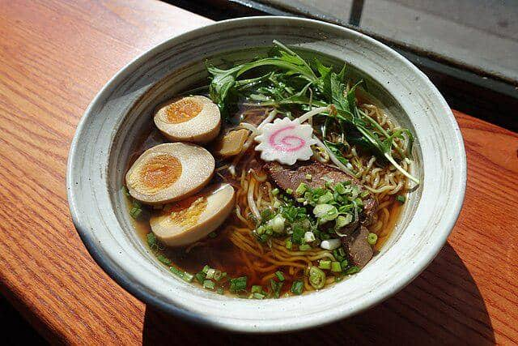
Shoyu Ramen
Rp 52.000Ramen klasik dengan kuah kaldu kecap asin Jepang (shoyu) yang jernih dan gurih, disajikan dengan irisan ayam panggang.
-
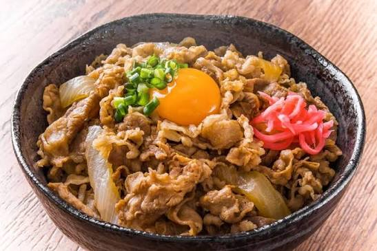
Beef Yakiniku Don
Rp 65.000Nasi putih hangat dalam mangkuk yang disajikan dengan irisan daging sapi premium panggang bumbu yakiniku manis gurih.
-
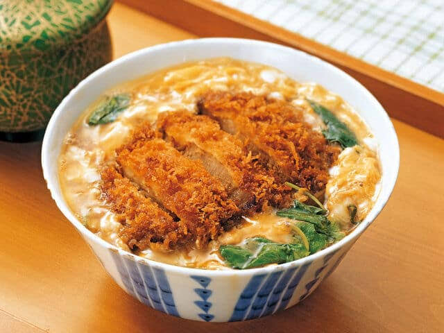
Chicken Katsudon
Rp 52.000Chicken katsu renyah yang dimasak perlahan bersama kocokan telur dan bawang bombay dalam saus kaldu manis di atas nasi hangat.
-
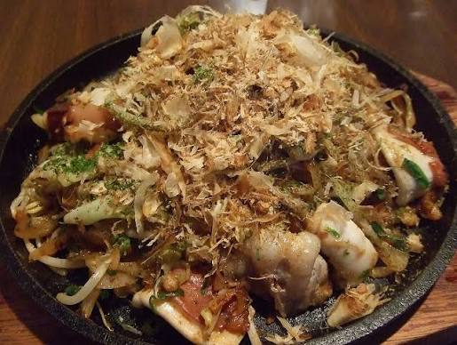
Seafood Yaki Udon
Rp 55.000Mi udon kenyal dan tebal yang ditumis dengan udang, cumi, sayuran segar, dan saus yakisoba khas Jepang.
-
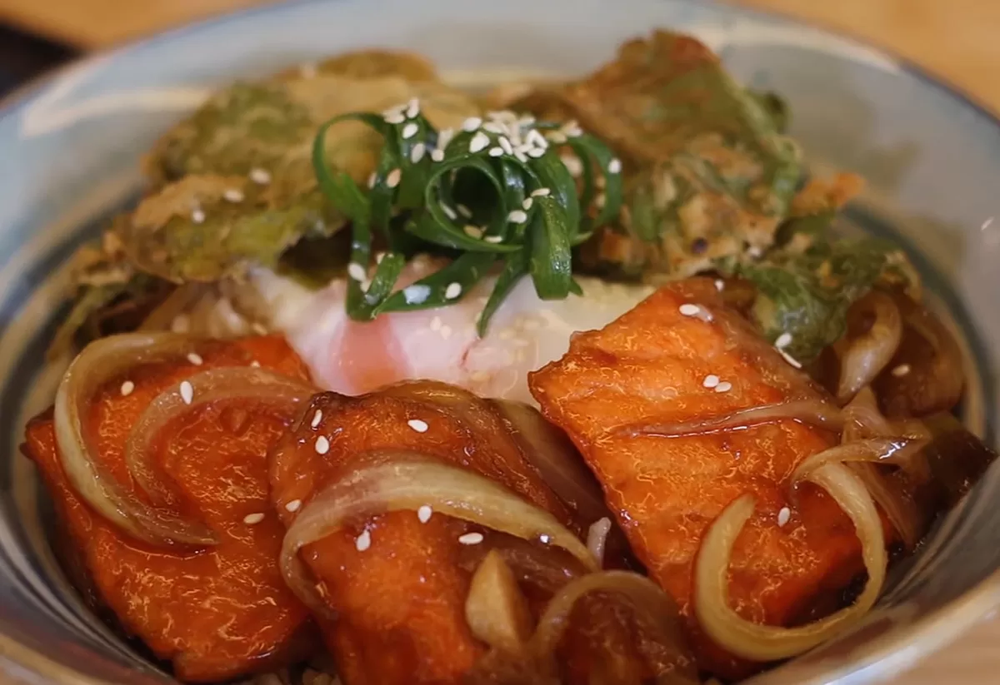
Salmon Teriyaki Set
Rp 72.000Potongan filet salmon panggang yang dilumuri saus teriyaki manis khas Jepang, disajikan lengkap bersama nasi putih hangat.
Dessert (Hidangan Penutup)
-
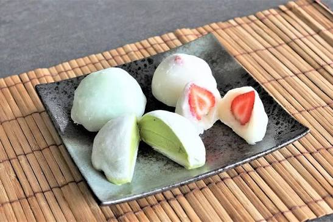
Mochi Ice Cream
Rp 28.000Kue mochi kenyal yang berisi es krim dingin. Tersedia rasa Matcha, Vanilla, dan Ogura.
-
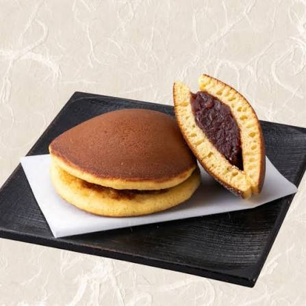
Dorayaki Cokelat
Rp 22.000Pancake lembut berlapis madu khas Jepang dengan isian pasta cokelat tebal.
-
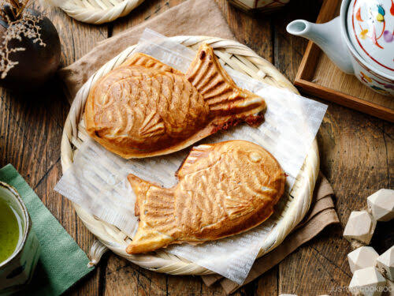
Taiyaki Kacang Merah
Rp 25.000Kue panggang berbentuk ikan tradisional Jepang dengan isian pasta kacang merah manis.
-
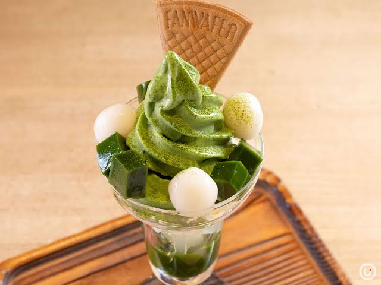
Matcha Parfait
Rp 42.000Gelas tinggi berisi lapisan es krim matcha, jeli, mochi, dan krim kocok manis.
-
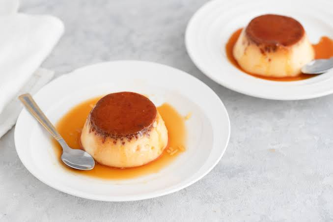
Japanese Purin
Rp 25.000Puding karamel panggang ala Jepang yang sangat lembut dan lumer di mulut.
Minuman
-
Ocha (Teh Hijau)
Rp 12.000Teh hijau khas Jepang asli yang menyegarkan (Tersedia Dingin/Panas, bisa diisi ulang).
-
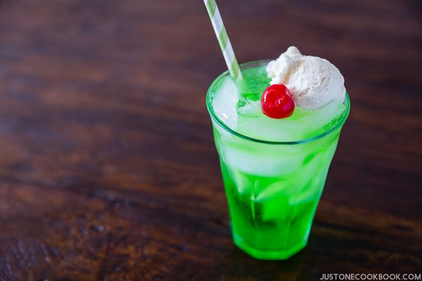
Melon Soda Float
Rp 25.000Minuman soda rasa melon ikonik Jepang yang disajikan dengan topping es krim vanilla.